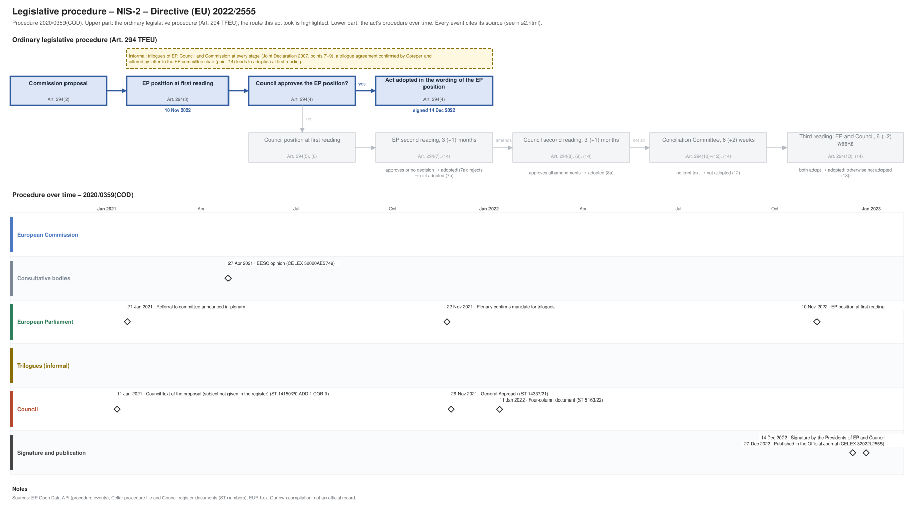

← Regulation timeline › NIS-2 › Legislative procedure · All procedures
Procedure 2020/0359(COD), completed. Drawing: SVG · PNG · PDF (A3) · draw.io · Page as Markdown: nis2.md
| Stage | Completed, published 27 Dec 2022 |
|---|---|
| Route (Art. 294 TFEU) | Agreement at first reading: the Council approved the EP position |
| Latest activity | 27 Dec 2022 · Signature and publication: Published in the Official Journal (CELEX 32022L2555) |

| Date | Actor | Event | Document | Source |
|---|---|---|---|---|
| 2020-12-16 | European Commission | Commission proposal (Art. 294(2) TFEU) | COM(2020) 823 | Cellar procedure file 2020/359 (CELEX 52020PC0823) |
| 2021-01-11 | Council | Council text of the proposal (subject not given in the register) | ST 14150/20 ADD 1 COR 1 | Cellar procedure file 2020/359 (Council register) |
| 2021-01-21 | European Parliament | Referral to committee announced in plenary | EP procedure file | EP Open Data API, procedure 2020-0359 (REFERRAL) |
| 2021-04-27 | Consultative bodies | EESC opinion | CELEX 52020AE5749 | Cellar procedure file 2020/359 |
| 2021-11-22 | European Parliament | Plenary confirms mandate for trilogues | EP procedure file | EP Open Data API, procedure 2020-0359 (PLENARY_ENDORSE_COMMITTEE_INTERINSTITUTIONAL_NEGOTIATIONS) |
| 2021-11-26 | Council | General Approach | ST 14337/21 | Cellar procedure file 2020/359 (Council register) |
| 2022-01-11 | Council | Four-column document | ST 5163/22 | Cellar procedure file 2020/359 (Council register) |
| 2022-11-10 | European Parliament | EP position at first reading (Art. 294(3) TFEU) | EP procedure file | EP Open Data API, procedure 2020-0359 (PLENARY_AMEND_PROPOSAL) |
| 2022-12-14 | Signature and publication | Signature by the Presidents of EP and Council | EP procedure file | EP Open Data API, procedure 2020-0359 (SIGNATURE) |
| 2022-12-27 | Signature and publication | Published in the Official Journal | CELEX 32022L2555 · en.md de.md | EP Open Data API, procedure 2020-0359 (PUBLICATION_OFFICIAL_JOURNAL) |
Every document the Council register, the EU database of the Parliament of Austria or the EP lists for the procedure, with its state: public documents link to the official file; documents that are not public link to their entry in the Austrian database where there is one (metadata only). Status: public; not public; not public, leak available (an unofficial copy is known to circulate outside the institutions; it is neither published nor quoted here). Released: when a document listed as not public was released, by the date of the Council's public PDF (a technical date) or else the day our daily check found it public.
| Date | Document | Kind | Subject | Status | Released | Text |
|---|---|---|---|---|---|---|
| 2020-12-17 | ST 14150/20 | council-transmission | Proposal for a DIRECTIVE OF THE EUROPEAN PARLIAMENT AND OF THE COUNCIL on measures for a high common level of cybersecurity across the Union, repealing … | public status unknown | – | – |
| 2020-12-17 | ST 14150/20 ADD 1 | council-transmission | ANNEXES to the Proposal for a DIRECTIVE OF THE EUROPEAN PARLIAMENT AND OF THE COUNCIL on measures for a high common level of cybersecurity across the Union, … | public status unknown | – | – |
| 2020-12-18 | ST 14150/20 ADD 2 | council-transmission | REGULATORY SCRUTINY BOARD OPINION: Proposal for a Directive of the European Parliament and of the Council on measures for a high common level of cybersecurity … | public status unknown | – | – |
| 2020-12-18 | ST 14150/20 ADD 3 | council-transmission | COMMISSION STAFF WORKING DOCUMENT: EXECUTIVE SUMMARY OF THE IMPACT ASSESSMENT REPORT Accompanying the document Proposal for a Directive of the European … | public status unknown | – | – |
| 2020-12-18 | ST 14150/20 ADD 4 | council-transmission | COMMISSION STAFF WORKING DOCUMENT: IMPACT ASSESSMENT REPORT Accompanying the document Proposal for a Directive of the European Parliament and of the Council on … | public status unknown | – | – |
| 2020-12-18 | ST 14150/20 ADD 5 | council-transmission | COMMISSION STAFF WORKING DOCUMENT: IMPACT ASSESSMENT REPORT Accompanying the document Proposal for a Directive of the European Parliament and of the Council on … | public status unknown | – | – |
| 2020-12-18 | ST 14150/20 ADD 6 | council-transmission | COMMISSION STAFF WORKING DOCUMENT: IMPACT ASSESSMENT REPORT Accompanying the document Proposal for a Directive of the European Parliament and of the Council on … | public status unknown | – | – |
| 2021-01-11 | ST 14150/20 ADD 1 COR 1 | council-text | ANNEXES to the Proposal for a DIRECTIVE OF THE EUROPEAN PARLIAMENT AND OF THE COUNCIL on measures for a high common level of cybersecurity across the Union, … | public | – | – |
| 2021-02-01 | ST 5573/21 | council-note | Optional consultation of the Committee of the Regions | public status unknown | – | – |
| 2021-03-19 | ST 7183/21 | council-transmission | Opinion on the application of the Principles of Subsidiarity and Proportionality | public status unknown | – | – |
| 2021-03-22 | ST 7183/21 COR 1 | council-transmission | Opinion on the application of the Principles of Subsidiarity and Proportionality | public status unknown | – | – |
| 2021-03-25 | ST 7278/21 | council-transmission | Opinion on the application of the Principles of Subsidiarity and Proportionality | public status unknown | – | – |
| 2021-04-27 | CELEX 52020AE5749 | opinion | Opinion of the European Economic and Social Committee on ‘Proposal for a Directive of the European Parliament and of the Council on measures for a high common … | public | – | – |
| 2021-06-28 | ST 10236/21 | council-transmission | Summary of the feedback received on the adopted proposal | public status unknown | – | – |
| 2021-11-04 | A9-0313/2021 | ep-report | REPORT on the proposal for a directive of the European Parliament and of the Council on measures for a high common level of cybersecurity across the Union, … | public | – | – |
| 2021-11-26 | ST 14337/21 | council-position | General Approach | public | – | – |
| 2022-01-11 | ST 5163/22 | trilogue | Four-column document | public | – | – |
| 2022-04-20 | ST 8240/22 | council-transmission | Opinion of the European Central Bank of 11 April 2022 | public status unknown | – | – |
| 2022-11-11 | ST 14617/22 | council-note | Outcome of the European Parliament's first reading (Brussels, 9 to 10 November 2022) | public status unknown | – | – |
| 2022-11-17 | PE 32/22 | council-note | DIRECTIVE OF THE EUROPEAN PARLIAMENT AND OF THE COUNCIL on measures for a high common level of cybersecurity across the Union, amending Regulation (EU) No … | public status unknown | – | – |
| 2022-11-18 | ST 14828/22 | council-note | Draft DIRECTIVE OF THE EUROPEAN PARLIAMENT AND OF THE COUNCIL on measures for a high common level of cybersecurity across the Union, amending Regulation (EU) … | public status unknown | – | – |
| 2022-11-22 | PE 32/22 REV 1 | council-note | public status unknown | – | – | |
| 2022-11-22 | ST 14828/22 REV 1 | council-note | Draft DIRECTIVE OF THE EUROPEAN PARLIAMENT AND OF THE COUNCIL on measures for a high common level of cybersecurity across the Union, amending Regulation (EU) … | public status unknown | – | – |
| 2022-11-22 | ST 14828/22 REV 1 ADD 1 | council-note | Draft DIRECTIVE OF THE EUROPEAN PARLIAMENT AND OF THE COUNCIL on measures for a high common level of cybersecurity across the Union, amending Regulation (EU) … | public status unknown | – | – |
| 2022-11-29 | ST 15412/22 | council-note | Voting result DIRECTIVE OF THE EUROPEAN PARLIAMENT AND OF THE COUNCIL on measures for a high common level of cybersecurity across the Union, amending … | public status unknown | – | – |
| 2022-12-15 | PE 32/22 REV 2 | council-note | DIRECTIVE OF THE EUROPEAN PARLIAMENT AND OF THE COUNCIL ON MEASURES FOR A HIGH COMMON LEVEL OF CYBERSECURITY ACROSS THE UNION, AMENDING REGULATION (EU) NO … | public status unknown | – | – |
Unofficial Markdown conversions for reading, searching and project folders; only the official document is authentic. "Read" opens the rendered text on GitHub, where a link to a provision (#art-13, #rec-12, #annex-i) jumps to it.
| Date | Stage | Document | Markdown | Read |
|---|---|---|---|---|
| 2022-12-27 | oj | CELEX 32022L2555 | en de | GitHub |
| 2023-12-22 | corrigendum | CELEX 32022L2555R(04) | en de | GitHub |
Comitology committees of Member State representatives give opinions on draft implementing acts (Regulation (EU) No 182/2011); expert groups advise the Commission on delegated acts, guidance and implementation; groups set up by an act itself (e.g. the NIS Cooperation Group) bring together the Member States, the Commission and agencies. Meetings and documents as published in the Comitology Register, the Register of Commission expert groups and on the Commission's pages of these groups, from 2024 on.
Comitology committee C127400, CNECT; examination procedure (Art. 5, 6 and 7 of Regulation (EU) No 182/2011). Official source: Comitology Register ↗
| Date | Meeting | Documents |
|---|---|---|
| 2024-10-02 | Cybersecurity Committee - 3rd meeting | agenda · draft implementing act v2 · draft implementing act v3 · voting sheet · summary record |
| 2024-09-09 | 2nd Cybersecurity Commitology | agenda · summary record |
| 2024-07-11 | 1st Cybersecurity Commitee Meeting | agenda · draft implementing act · summary record |
Group set up by the act, Art. 14 NIS-2 (before: Art. 11 Directive (EU) 2016/1148). Official source: European Commission (digital-strategy.ec.europa.eu) ↗
| Date | Meeting | Documents |
|---|---|---|
| 2026-05-21 | 39th meeting | agenda |
| 2026-02-12 | 38th meeting | agenda |
| 2025-11-12 | 37th meeting | agenda |
| 2025-09-25 | 36th meeting | agenda |
| 2025-05-15 | 35th meeting | agenda |
| 2025-01-23 | 34th meeting | agenda |
| 2024-11-20 | 33rd meeting | agenda |
| 2024-09-25 | 32nd meeting | agenda |
| 2024-05-23 | 31st meeting | agenda |
| 2024-03-12 | 30th meeting | agenda |
General reports
Annual summary incident reports
Cybersecurity of 5G networks